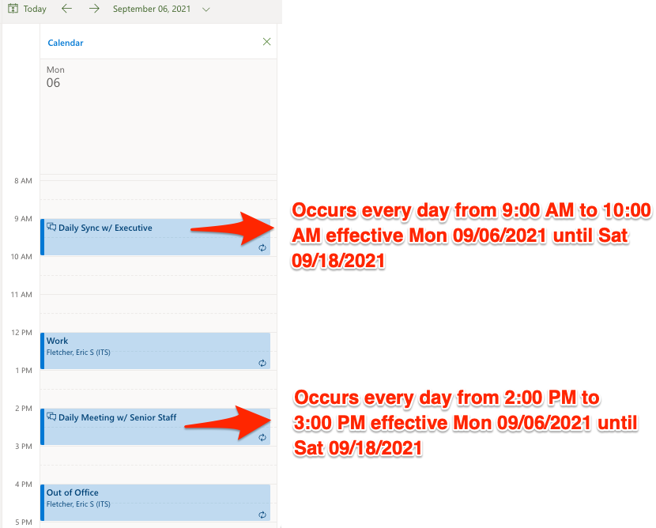
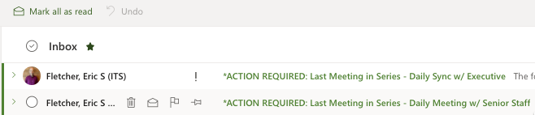
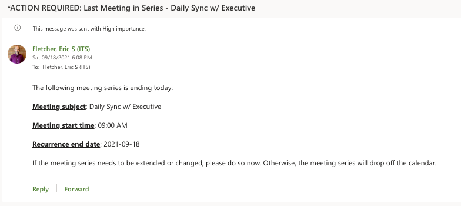
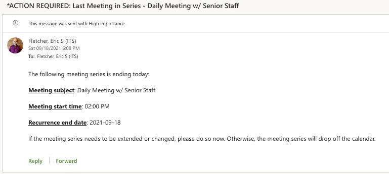
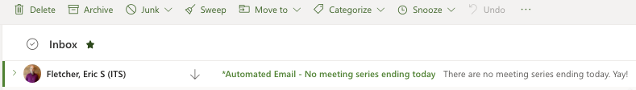

Once upon a time, I interviewed to be an Executive Assistant at Amazon. For those who are unaware,
interviews at Amazon oftentimes include a "Bar Raiser." A Bar Raiser is an additional interviewer at Amazon
who is brought into the hiring process to be an objective third party. The Bar Raiser in my interview
asked me
a terrific question. They asked if I could develop any application to help increase workflow productivity,
what would it be?
I thought for a minute and responded by saying I'd develop a Microsoft Outlook add-in that would display an
alert for recurring meetings happening that day that are on their last iteration of the meeting series.
According to
my research, the only way to be notified when a meeting series was on its last iteration was to set up a
separate reminder with a date that matches the end date on the initial meeting notification. This is a
terrible
approach for various reasons. For example, if the end date changes, which it often does, the user would have
to remember to update that separate reminder. While this isn't exactly terrible per se, it is certainly not
ideal.
If I could somehow handle this dilemma programmatically, it would lessen the chances of the user forgetting
to update
that second reminder, or mistakenly updating the reminder with a date that doesn't match.
I have now decided to implement a solution to this problem through process automation using Microsoft Power
Automate. The process is described below.
I created a Power Automate flow that runs every day
at 4:00 AM, Coordinated Universal Time (UTC), or 12:00 AM when
converted to my timezone (Eastern Standard Time). The order of events are described below.
1) Get all of the events on my calendar.
2) Filter for events that are recurring.
3) Filter the recurring events for events that have a recurrence end date equal to the current date.
4) Check if there are any events that are found after running steps 2 and 3.
- If there are events, send an email notification for each event.
- If there are no events, send an email notification with blurb stating no events found.
For this example, we have two recurring meetings shown below.

The two recurring meetings have a recurrence end date that matches today's date (2021-09-18).
As a result, two separate email notifications are sent.

The body of each automated email is shown below.


If there are no recurring events, or recurring events with a recurrence end date that doesn't match the
current date,
an email notification is also sent.

Below is the Power Automate flow I created for this project. Feel free to use my code as a framework for
your own
implementation!